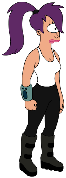

In what concerns the continuous evaluation solving exercises grade during the semester, you should submit until 23:59 of
(this exercise will still be available for submission after that deadline, but without counting towards your grade)
[to understand the context of this problem, you should read the class #09 exercise sheet]
In this problem you should submit a function as described. Inside the function do not print anything that was not asked!
(in this class you are expected to write a solution that uses recursion - mooshak will not force it, but that should be your goal; don't use itertools)

Leela, the fearless captain of the Planet Express, is organizing a dinner party and wants to invite exactly k friends from her list of available friends. However, there's a problem: some of her friends don't get along with each other and are enemies. Leela wants to ensure that no two enemies are invited to the dinner together, as she doesn't want any awkward situations. Can you help Leela?Write a function dinner(friends, k, enemies) that generates all possible valid combinations of k friends such that no two enemies are included in the same combination. friends is a list of strings and enemies is a set of pairs of strings indicating the pairs of enemies that cannot be together on the dinner.
The following limits are guaranteed in all the test cases that will be given to your program:
| 2 ≤ k ≤ 10 | size of a combination |
| 2 ≤ |friends| 10 | number of friends |
| 0 ≤ \enemies| ≤ 20 | number of pairs of enemies |
| Example Function Calls | Example Output |
|---|---|
friends = ["bender", "conrad", "fry", "leela", "amy"]
enemies = {("fry", "bender"), ("leela", "conrad")}
output = dinner(friends, 3, enemies)
print(sorted(output))
print()
friends = ["bender", "conrad", "fry", "leela", "amy", "zoidberg","farnsworth"]
enemies = {("fry", "bender"), ("bender","zoidberg"),("fry","zoidberg")}
output = dinner(friends, 4, enemies)
print("output is of type", type(output))
print("output has size:", len(output))
for x in sorted(output): print(x)
|
[['amy', 'bender', 'conrad'], ['amy', 'bender', 'leela'], ['amy', 'conrad', 'fry'], ['amy', 'fry', 'leela']] output is of type <class 'list'> output has size: 13 ['amy', 'bender', 'conrad', 'farnsworth'] ['amy', 'bender', 'conrad', 'leela'] ['amy', 'bender', 'farnsworth', 'leela'] ['amy', 'conrad', 'farnsworth', 'fry'] ['amy', 'conrad', 'farnsworth', 'leela'] ['amy', 'conrad', 'farnsworth', 'zoidberg'] ['amy', 'conrad', 'fry', 'leela'] ['amy', 'conrad', 'leela', 'zoidberg'] ['amy', 'farnsworth', 'fry', 'leela'] ['amy', 'farnsworth', 'leela', 'zoidberg'] ['bender', 'conrad', 'farnsworth', 'leela'] ['conrad', 'farnsworth', 'fry', 'leela'] ['conrad', 'farnsworth', 'leela', 'zoidberg'] |
Content by Pedro Ribeiro and Bernardo Portela (DCC/FCUP), migrated from dcc.fc.up.pt/~pribeiro/aulas/ip2526/problems/ip095.html.